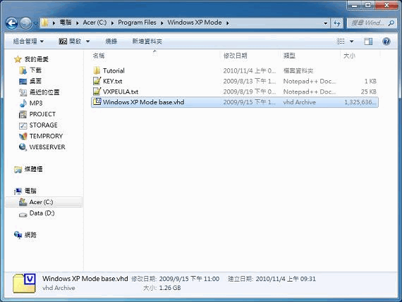
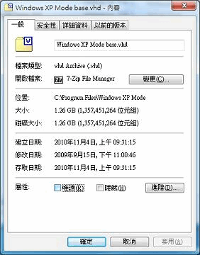
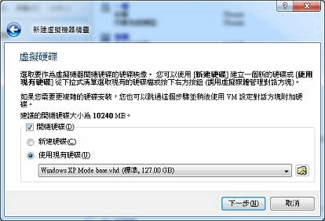

Windows 7 家用版如何使用 Windows XP Mode？
做法
Windows 7 家用版其實可下載 Windows XP Mode，只是不開放 Windows Virtual PC 服務。
但可改用 VirtualBox，只要 Windows XP Mode 安裝後，到 C:\Program Files\Windows XP Mode 資料夾，將 Windows XP Mode base.vhd 這個檔案的「唯讀」取消即可：


系統禁止你取消唯讀的話，可以把這個檔案另外複製一個來用。
然後啟動 VirtualBox，在建立「虛擬硬碟」的步驟，選擇「使用現有硬碟」，再把剛剛取消唯讀的 Windows XP Mode base.vhd 加入即可：

Windows XP Mode 安裝速度超快，而且執行速度很理想，比跑 Ubuntu 還快，某些不太強調配備的遊戲，像是《神話世紀》《信長野望烈風傳》都玩得很順利。
觀念
你應該知道這個概念：「VirtualBox 對於顯示卡的支援也是一種虛擬。」亦即我們無法在 VirtualBox 模擬的 Windows XP 完全發揮顯示卡的效能，所以 Windows XP Mode 並不能徹底解決遊戲不相容 Windows 7 的問題：「有些遊戲會跑不動。」
Microsoft 推出 Windows XP Mode 本來就不是解決遊戲相容性之用，而是讓企業建置在 Windows XP 的應用系統，在轉移到 Windows 7 能如預期運行、避免發生非預期的狀況，是一種過渡時期的機制，並非相容性的解決方案。這點來看，Windows XP Mode 只支援 Windows 7 專業版以上是合理的。